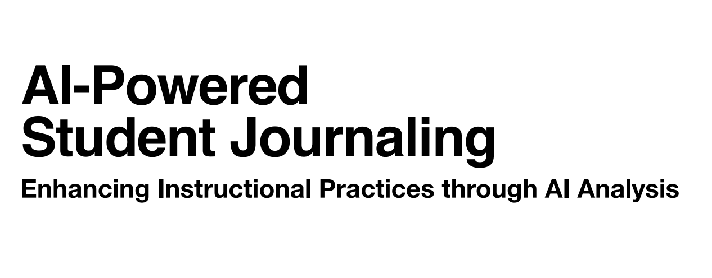

SWin: Sliding Window Summarization
Novel memory mechanism for coherent LLM-driven dialogue systems. Master's thesis contribution improving long-form context retention through sliding window summarization.
LLM Memory
Dialogue Systems
Evaluation